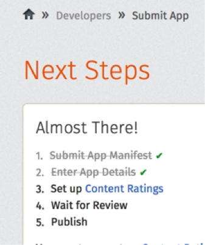
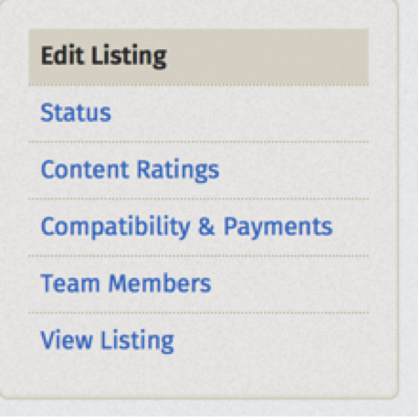
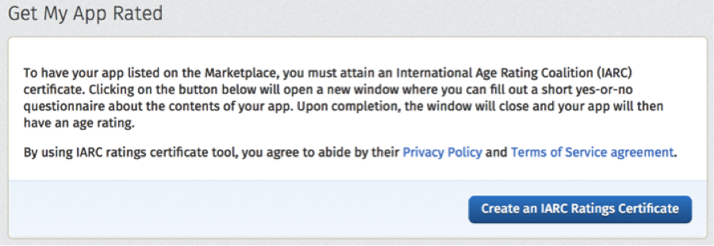
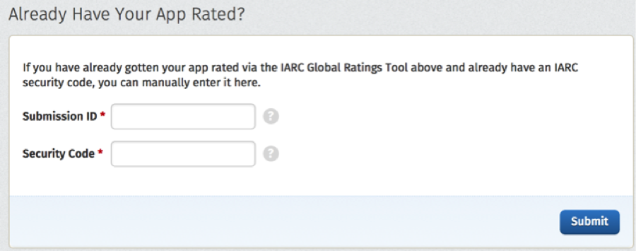
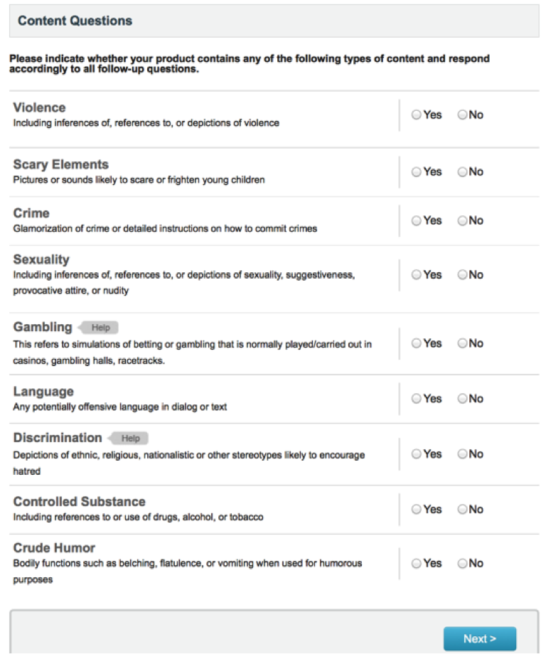
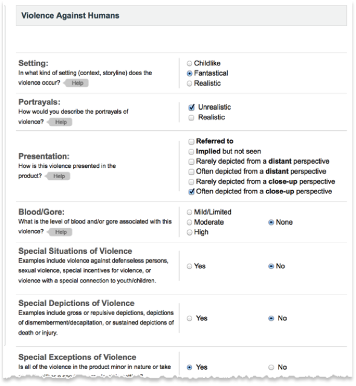
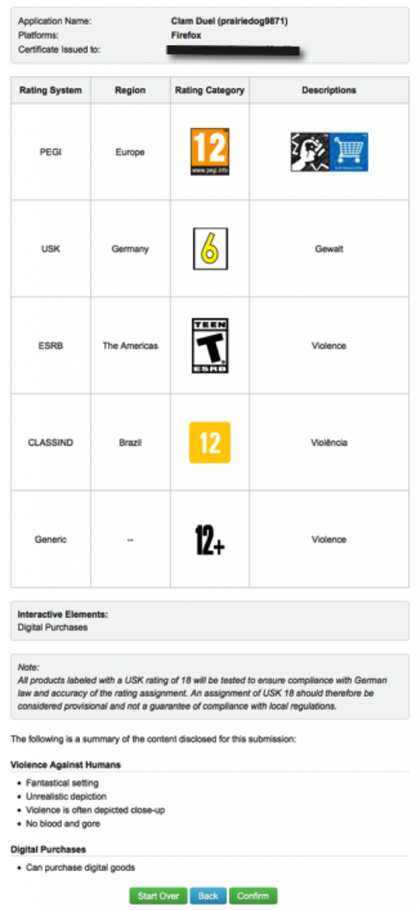

你是熱血的 Firefox OS 開發者，而且早已設計了許多 App 準備大展身手嗎？在透過 Firefox Marketplace 推銷自己的 App 之前，務必先完成 App 的適用年齡分級！否則在今年 4 月 15 日之後，消費者就沒辦法在 Marketplace 上看到你的 App 了！

Mozilla 與國際年齡分級聯盟 (International Age Rating Coalition，IARC) 合作，將所有 App 均納入適用年齡分級規範。Mozilla 關心使用者，並認為使用者應能自行選擇適合自己的內容。而從 2014 年 4 月 15 日起，凡 Firefox Marketplace 內的所有 App 均必須完成 IARC 分級。Mozilla 絕對在乎、愛護所有的 App，也必須要求所有 App 或遊戲完成內容分級。在 2014 年 4 月 15 日之後，只要是未完成內容分級的 App 均將強制從 Marketplace 下架。而 IARC 另提供免費工具讓開發者進行內容分級。
有關 IARC 分級工具
IARC 是由多間國際級的分級委員會合力運作，針對以數位方式發佈於全球的 App 與遊戲，提供了相關工具作為內容分級的基準。只要填寫簡單表格，就會立刻收到所有分級委員會所制定的分級規範。此份規範不僅可協助消費者了解 App 的內容，亦可讓開發者不需個別取得各國的內容分級，進而大幅縮減成本與不便。
支援國際分級系統
透過單一分級精靈功能，即可產生不同系統、國家、地區的內容分級。
分級系統
支援國家
Classificação Indicativa
Brazil
ESRB
Canada, Mexico, United States
PEGI
Austria, Denmark, Hungary, Latvia, Norway, Slovenia, Belgium, Estonia, Iceland, Lithuania, Poland, Spain, Bulgaria, Finland, Ireland, Luxembourg, Portugal, Sweden, Cyprus, France, Israel, Malta, Romania, Switzerland, Czech Republic, Greece, Italy, Netherlands, Slovak Republic, United Kingdom
USK
Germany
通用
其他所有國家適用
內容分級包含哪些項目？
分級系統將提供消費者三種資訊：
- 建議最小年齡 (The recommended minimum age) ─ 可能因各國民情風俗而有所差異
- 內容說明 (Content descriptors) ─ 該項資訊將說明 App 的所有內容，讓消費者了解自己關心的要點。其內可能包含暴力、酒/藥品使用參考、驚悚指數、實際/模擬博奕行為等資訊。
- 互動要素 (Interactive Elements) ─ 該項資訊將提供 App 與消費者互動功能的相關細節，如分享個人資料、分享所在地理位置、應用程式內部付費機制、可下載的內容，或社交網路工具。
分級程序僅需幾分鐘且完全免費，並已整合至 Firefox Marketplace 提交程序與開發者主控板中。任何 App 必須先完成分級才能進行審查。消費者可在 App 說明頁面上看到 App 對應其所在地區的分級，並取得自己想進一步了解的相關資訊。
讓自己的 App 完成內容分級
IARC 即提供免費的遊戲分級工具，且大多數的 App 都能輕鬆又快速的完成分級。接著來看看分級程序。
注意：Mozilla 並不接受其他系統的分級認證。即使 App 已經完成其他系統的內容分級，開發者仍需要完成 IARC 認證程序。
- 登入 Firefox Marketplace 開發者網站。你必須以開發者身分登入，才會看到分級工具。
- 在 App 提交程序期間，就會進入 IARC 分級工具：

或可從 Dev Dashboard 找到分級工具：
- 開始分級程序：

或可輸入現有分級的資訊：
- 填寫簡單的問卷：

- 為自己的 App 添加額外資訊：

- 預覽並確認分級資訊：

- 回到 Dev Dashboard 就會看到分級資訊。接著就可準備上架！
注意：開發者接著會收到電子郵件，內含分級認證與安全碼。請自行保留相關記錄備查。
Mozilla 開發者社群網站 (MDN) 原文連結：Obtaining a Rating for Your App
你也可參閱中文版：取得 App 內容分級；並參閱 MDN 的更多 Firefox OS 或 Marketplace 相關文章。